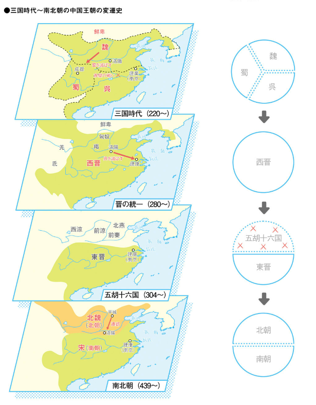
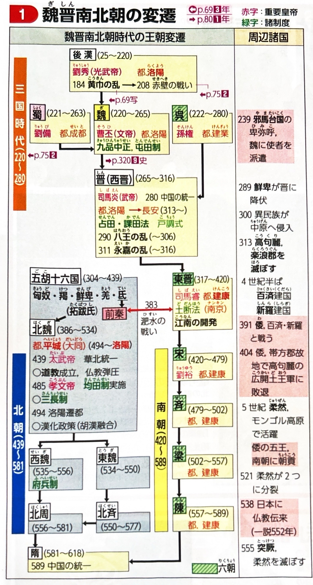
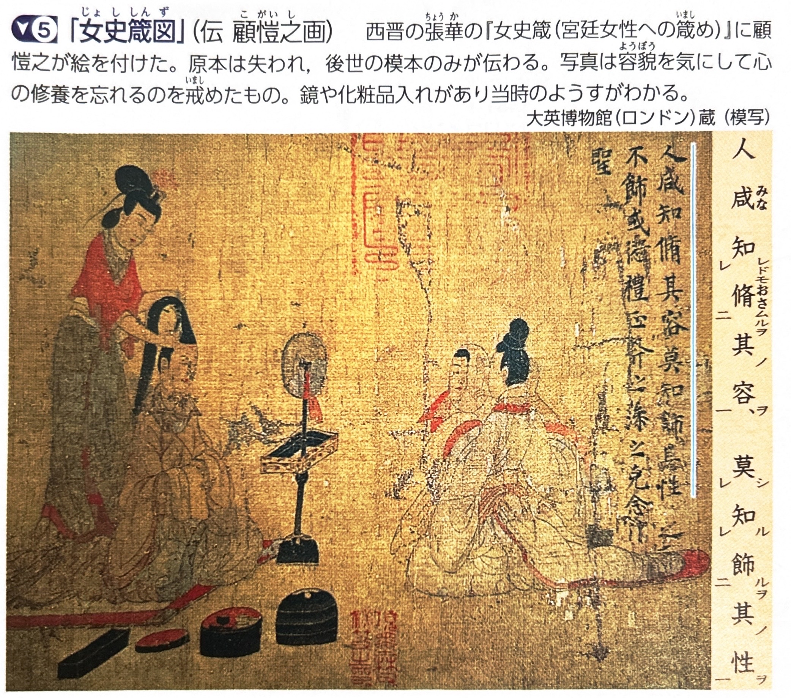
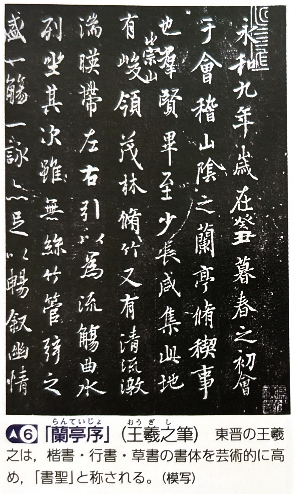
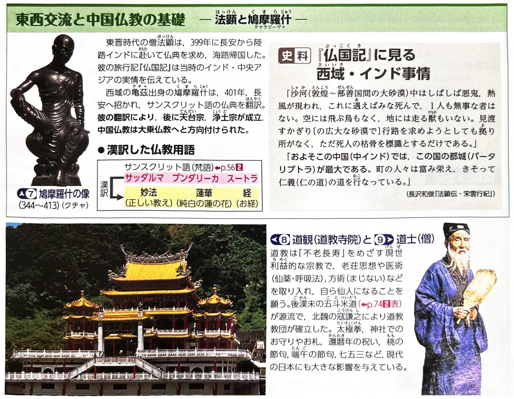
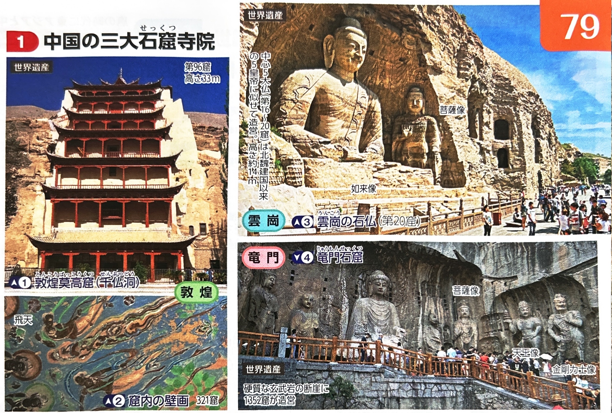
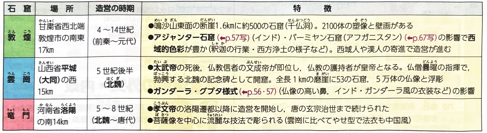

中国史③（魏晋南北朝）
ポイント総復習
秦・漢帝国の時代に約5000〜6000万人いた人口は、次の「三国時代」には戦乱や気候寒冷化により800万人以下に激減したとも言われています。この時代は、魏晋南北朝（ぎしんなんぼくちょう）と呼ばれる約370年にも及ぶ分裂と動乱の時代です。


1. 三国時代（220年〜280年）
黄巾の乱後の群雄割拠や「赤壁の戦い」を経て、中国は３つの国が鼎立（ていりつ）する時代となります。
| 国名 | 都 | 建国者と特徴 |
|---|---|---|
| 魏（ぎ） | 洛陽（らくよう） | 華北を支配。曹操が実質的な建国者であり、その子・曹丕（そうひ）が220年に後漢を滅ぼして建国しました。 |
| 蜀（しょく） | 成都（せいと） | 四川盆地（蜀）を支配。漢の皇族の末裔である劉備（りゅうび）が建国しました。 |
| 呉（ご） | 建業（けんぎょう） | 江南（長江下流域）を支配。孫権（そんけん）が建国しました。 |
2. 西晋の統一と五胡十六国・南北朝の分裂
三国の争いは、魏の家臣であった司馬炎が建てた「西晋（せいしん）」によって一旦統一されますが、長くは続きませんでした。
280年：西晋（せいしん）による統一
魏の武将・司馬炎（しばえん）が魏から帝位を奪い「晋（西晋）」を建国。呉を滅ぼして中国を統一しました。
304年〜：五胡十六国（ごこじゅうろっこく）時代
西晋の内部争いに乗じて、北方の5つの騎馬遊牧民（五胡：匈奴・鮮卑・羯・氐・羌）が華北に侵入し、次々と国を建てました。
317年：東晋（とうしん）の建国
五胡の侵入により西晋が滅亡（永嘉の乱）すると、皇族の司馬睿（しばえい）が江南へ逃れ、建康（かつての建業）を都として東晋を建てました。これ以降、華北（北朝）と江南（南朝）の分裂時代が続きます。
3. 魏晋南北朝の宗教と文化
戦乱が続く不安な社会状況の中で、人々の心の救いとして仏教や道教が広く信仰されるようになりました。
① 仏教の伝播と発展
1世紀頃に西域から伝わっていた仏教が、この時代に大きな広がりを見せました。
| 人物・出来事 | 特徴・業績 |
|---|---|
| 西域僧の活躍 | 亀茲（クチャ）出身の仏図澄（ぶっとちょう）や、仏典の漢訳に尽力した鳩摩羅什（クマラジーヴァ）らが活躍しました。 |
| 法顕（ほっけん） | 東晋の僧。仏典を求めて陸路でインド（グプタ朝）へ赴き、海路で帰国。その旅行記を『仏国記』として著しました。 |
② 道教の成立と弾圧事件（三武一宗の法難）
中国古来の民間信仰などを基盤として「道教」が成立し、仏教勢力と激しく対立しました。
- 道教の確立：北魏の第3代太武帝に仕えた道士の寇謙之（こうけんし）が、道教教団（新天師道）を確立しました。（※従来の天師道とは、後漢末の五斗米道のことです。）
- 三武一宗の法難：皇帝による中国史上4回の仏教弾圧事件のことです。最初の弾圧（446年）は、北魏の太武帝が寇謙之の進言を受けて仏教を弾圧した事件でした。





基礎問題（理解度チェック）
Q1. 三国時代の王朝について、空欄を埋めなさい。
後漢が滅亡した後の三国時代において、華北を支配し洛陽を都としたのは
である。また、四川盆地を支配し成都を都としたのは
であり、江南を支配し建業を都としたのは
である。その後、司馬炎が建てた
によって中国は一時的に統一された。
Q2. 魏晋南北朝の宗教と文化について、空欄を埋めなさい。
この時代、西域出身の仏図澄や
らによって仏教が広く布教され、仏典の漢訳が進んだ。また、東晋の僧である
は、陸路でインドへ赴いて仏典を求め、その旅行記を『仏国記』として著した。一方、中国古来の信仰から成立した道教は、北魏の太武帝に仕えた道士
によって教団が確立された。彼の進言により、太武帝は激しい仏教弾圧を行った。これを「
」の最初の事件という。
Q3. 三国時代の後の西晋の統一は長く続かず、北方の「五胡（匈奴・鮮卑など）」が華北に侵入したことで西晋は滅亡した。その後、西晋の皇族が江南へ逃れて建康を都とする「東晋」を建てたことで、華北と江南が分裂する時代が始まった。